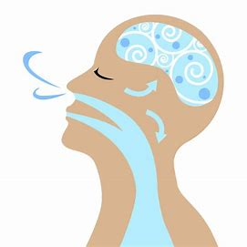
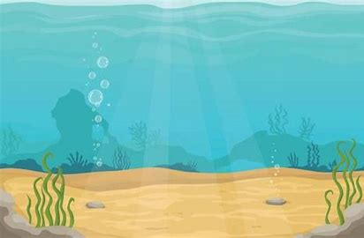

How to Breath efficiently
Our life is very important, or at least mine is. In my life I can do a lot of very important things and if I died then I would not be happy. sooooooooooooooooooooooooooooooooooooooooo i'm not going to die. But how do you ask? Well, I'm going to use an ancient art known only to the wise and worthy of living beings. I'm going to do something that will astonish you. I'm going to breathe. Now I know it's never been done before, but I'm brave enough to try. In this website you can try along with me.

Now, to gain my full status as a "breather of air" I need to master the 3 ancient breathing techniques.
The first one is breathing on land. To breath on land you will need:
To start, get on land, and take some oxygen in your hand. You then stuff your entire hand into your mouth and suck it for about 30 years. If you do this correctly, you should stop dieing *yay* (on land that is).
The second one is breathing in the water. To breath underwater you will need:
- yourself
- water
- and oxygen
To start, get underwater, and take some oxygen in your hand. You then do 5 flips underwater and say the secret password (if you are worthy then it should be obvious) If you do this correctly, you should stop dieing *yay* (underwater that is).

The third one is breathing in space. To breath in space you will need:
- yourself
- spy skills
- and oxygen
contrary to popular opinion, there is plenty of oxogen in space. The first step to preform the last of the three ancient arts of breathing is to sneak into space. If you need help doing that then you are too helpless to be worthy of all three air breathing techniques. you then preform the last two air breathing techniques in order. If you do this correctly, you should stop dieing *yay* (in space that is).